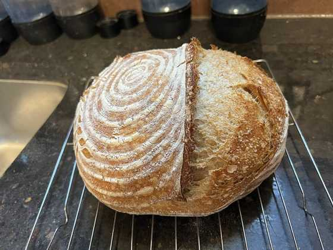
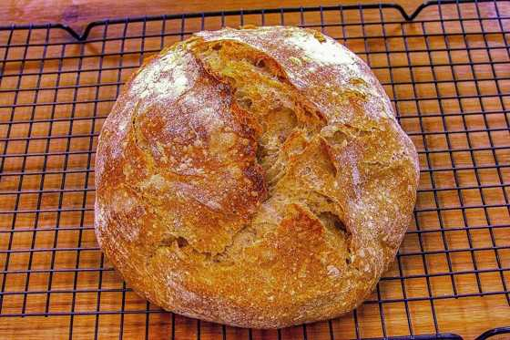
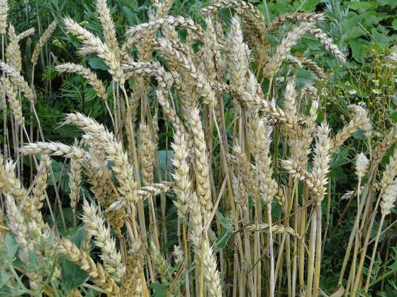
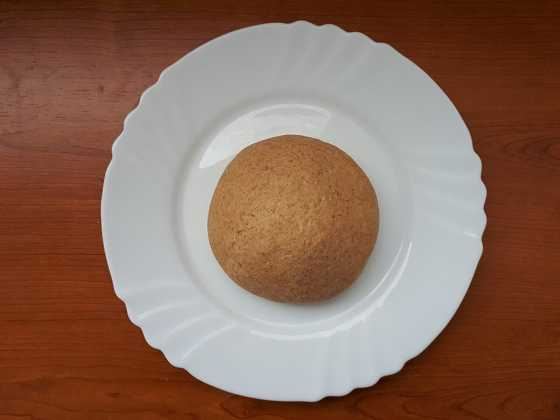
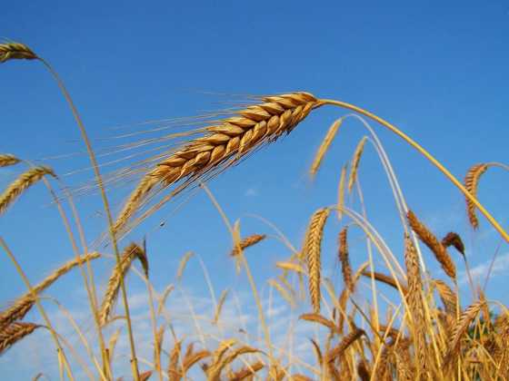
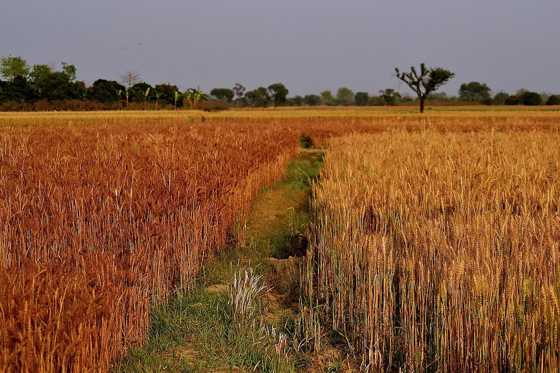
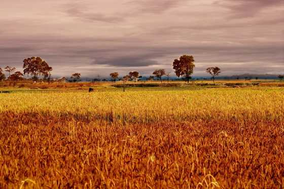

ハード系・全粒粉
酵母や小麦の配合を変えた生地が10種類以上あると紹介されています。
掲載写真はフリー素材のイメージで、当店の実際の店内・商品・風景ではありません。他地域(海外を含む)で撮影されたものや、撮影地が不明なものも含みます。

佐賀県伊万里市二里町・車庫から始まったパン屋
国産小麦と天然酵母、長い時間をかけた発酵。手でのばして、ひとつずつ焼き上げる小さなパン屋です。
写真イメージ(フリー素材 / 撮影地:不明)
お店の由来と想い
紹介記事によると、店主の藤瀬たつよさんは、ご夫婦で伊万里市にレストラン「ゴエモン」を営み、店内でパンも販売していました。体力的な限界を感じてレストランを閉じたあと、娘さんの「なんもせんかったらボケるよ〜」という言葉がきっかけとなり、63歳のときにご自宅のガレージを改装してパン屋を始めたと紹介されています。店名はレストラン時代から引き継がれています。
パンづくりは、娘のそのみさんと一緒に、生地づくりから試行錯誤しながら新作を考えているとのこと。「自分たちが美味しいと思うものを皆さんにも食べて欲しい」という姿勢と、食べてくれる人への感謝を大切にされていると紹介されています。2024年の記事では、「無理をせず、楽しくパンを焼く」ことを心がけているとも伝えられました。



店名「ゴエモン」の意味・由来は、確認できた記事には書かれていません。このページでは断定せず、パン屋らしい温かな色合いや言葉づかいは制作側のイメージです。
情報源: EDITORS SAGA(2018年) / 佐賀新聞(2024年5月) / Instagram
口コミ(イメージ例)
以下は制作側が作成したイメージ例であり、実在のお客様の声ではありません。
小麦の香りがしっかりして、噛むほどに味が出ます。形が少しずつ違うのも手づくりらしくて好きです。
クロワッサンは小ぶりで食べやすく、朝ごはんにぴったり。ついもう一つ買ってしまいました。
少し遠くからでも買いに行きたくなる小さなパン屋さん。早めに行くのがおすすめです。



いずれもWikimedia Commonsの写真です。一部は幅を縮小しています。